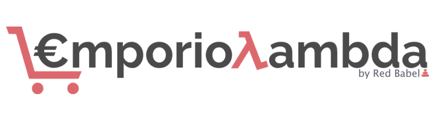
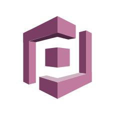
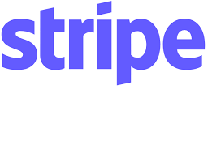

# SWException ### Corso di Ingegneria del Software Università degli Studi di Padova A.A. 2020/2021 Laurea triennale in informatica <em>Technology Baseline - 01/03/2021</em>  Piattaforma di e-commerce in stile serverless --- ## Tecnologie comuni tra i micro servizi ### Framework serverless Il principale strumento adottato per lo sviluppo di EmporioLambda è il framework serverless nella versione open-source. Questo facilita di molto la definizione delle API dei vari micro servizi e il deploy di questi nell'infrastruttura cloud di AWS. ### Linguaggio typescript Il linguaggio di programmazione adottato per tutte le parti dell'applicazione è TypeScript. Questo, rispetto a JavaScript, offre un controllo sui tipi in fase di compilazione (quindi come controllo statico). ### AWS Lambda Il servizio AWS Lambda serve a realizzare l'architettura in stile serverless che gestisce il funzionamento dell'applicazione con chiamate asincrone alle funzioni esposte. Inoltre il costo fatturato viene calcolato in base al tempo di esecuzione di queste funzioni. ### API Gateway È il servizio di AWS che permette il collegamento tra le API esposte. <!-- TODO --> --- ## Frontend (EML-FE) <img src="imgs/tb/nextjs.png" width="200em"/> Il framework utilizzato per il front end è Next.js Next.js è un Framework basato su React con la funzione integrata per il pre-rendering. Utilizzando sia il Server Side Rendering (SSR) che la Static Generation (SSG) l'HTML necessario per il rendering viene generato sul lato server e inviato al lato client. Oltre a questo supporta Typescript e fornisce un sistema di routing dinamico basato sulle "pages". <!-- TODO: inserire motivazioni scelta tecnologie front end --> --- ## Backend (EML-BE) <img src="imgs/tb/DynamoDB.png" width="200em"/>   ### DynamoDB Questo tipo di database è stato scelto in quanto si integra perfettamente con gli altri servizi AWS. Inoltre è un DB completamente gestito da AWS che offre attraverso una semplice configurazione scalabilità, sicurezza ed elevate prestazioni a qualsiasi scala. ### Amazon Cognito La gestione dell'autenticazione e delle credenziali è affidata a Cognito, il quale si occupa anche di inviare le email di verifica e per il recupero password. È perfettamente integrato con gli altri servizi AWS, offrendo un livello di sicurezza maggiore di qualsiasi infrastruttura eventualmente creata da noi. Inoltre il tempo necessario ad implementarlo è molto basso. ### Stripe Per la gestione dei pagamenti ci siamo affidati alla piattaforma esterna Stripe. In questo modo non dovremo preoccuparci di rispettare gli standard di sicurezza previsti per le piattaforme che gestiscono i pagamenti in modo autonomo. --- ## Cosa abbiamo realizzato Nel nostro PoC abbiamo inserito: - gestione dell'autenticazione con Amazon Cognito - visualizzazione di un carrello predefinito con fetch dei dati da DynamoDB - checkout del carrello con Stripe --- ## Grazie dell'attenzione!